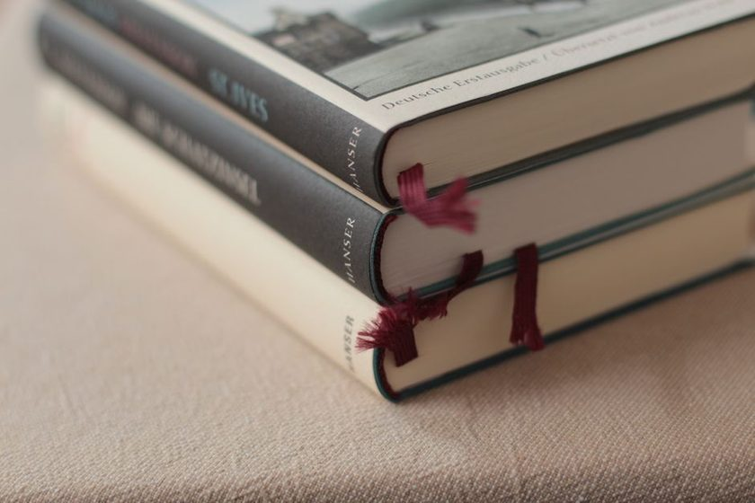
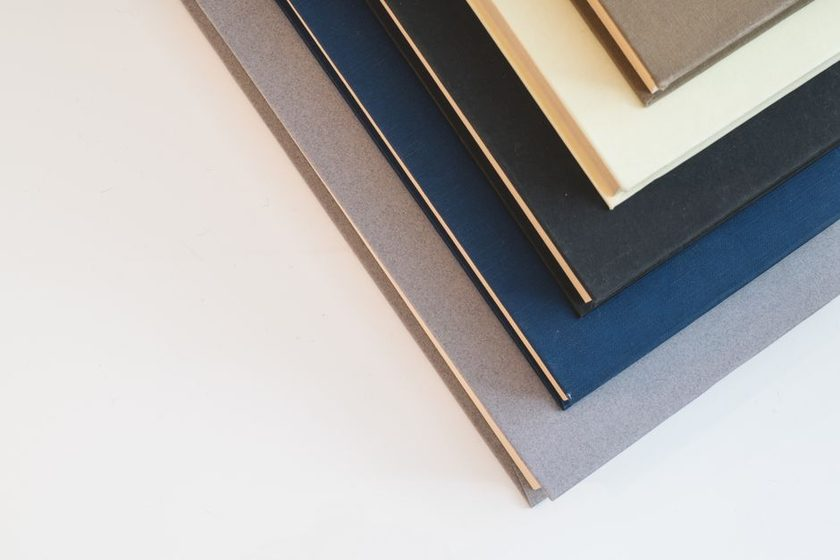

Reading the Broken Fold
Before any needle touches the paper, the fold itself tells you what happened and what it will tolerate a second time.
Read the entry →Notes from the bench
Kettlestitch is a small journal about the physical work of keeping books together — sewing signatures, reattaching a spine, choosing thread and paper — and about the harder question of when a repair should be left undone.
We write about structure, not restoration theater. Every entry comes out of actual bench time: a book that came apart in a particular way, a decision that could have gone two directions, and the reasoning behind the one we picked.
Short, specific pieces on signatures, sewing, spines, and the materials in between.
Before any needle touches the paper, the fold itself tells you what happened and what it will tolerate a second time.
Read the entry →Two structures do the same job at the head and tail of a spine, and picking the wrong one shows up months later, not the same day.
Read the entry →
Not every crack is a problem to solve. Sometimes the honest choice is to stabilize the damage and leave it visible.
Read the entry →Some hardcovers lie open on a table with no hand holding them down. The reason is a gap most readers never notice.
Read the entry →Thread that is strong enough to hold and gentle enough not to cut a fold that has already gone brittle.
Read the entry →Five books came in for the same reason without ever having touched each other. What they shared was how they were shelved.
Read the entry →
A fold made against the grain looks fine for a while, then fails all at once along a line you could have predicted.
Read the entry →The workbench gets the attention. The hand tools, and how lightly you hold them, decide most of the outcome.
Read the entry →It is the least interesting step in any repair, and skipping it is the fastest way to make the second half harder.
Read the entry →Before you sew, you count — collation, page order, and how many signatures a text block actually has. Signature Count is a small companion tool for keeping that tally straight across longer rebinding projects, without a spreadsheet.
Kettlestitch is edited by a small group of working binders who write about structure before decoration. No project photos of finished flourishes — mostly the unglamorous middle, where the actual repair decisions get made.
One or two entries a month. No promotions, nothing sold.
You're on the list — thank you.